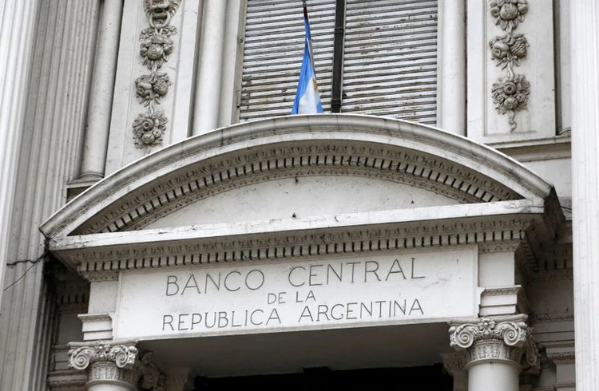

Por el ámbito financiero se habilitó una línea de créditos blandos por unos $350.000 millones para garantizar la producción y el abastecimiento de alimentos e insumos básicos, impulsar la actividad y financiar el funcionamiento de la economía en esta coyuntura.
Permitirá proveer capital de trabajo a las empresas a tasas preferenciales por un plazo de 180 días con tasa de interés será 24% anual.
Destinarán $25.000 millones en créditos del Banco de la Nación Argentina a tasa diferencial para productores de alimentos, higiene personal y limpieza y productores de insumos médicos.
Dispondrán $8.000 millones en financiamiento para la producción de equipamiento tecnológico para garantizar la modalidad de teletrabajo.

El Banco Central liberó encajes para destinarlos a préstamos a tasas moderadas para pymes (Reuters)
Otros $2.800 millones estarán destinados para el financiamiento de infraestructura en los parques industriales, con recursos del Ministerio de Desarrollo Productivo.
Renovará el programa Ahora 12 por un plazo de seis meses con expansión hacia compra online de productos nacionales, con énfasis en pymes.
Requerirá autorización previa para la exportación de insumos y equipamiento médico que el país necesita para afrontar la pandemia.
Habrá un programa de desarrollo y crecimiento de equipamiento médico, kits, insumos, juntos al Conicet, los ministerios de Ciencia y Tecnología, Desarrollo Productivo, Economía y Salud para estimular la innovación y el crecimiento de la producción.
Acelerará el pago a reintegros a la exportación para las firmas industriales.
El Banco Central liberó encajes para destinarlos a préstamos a tasas moderadas para pymes.
Nuevos topes a la posición de Letras de Liquidez (Leliq) de los bancos. De esa manera, liberará unos $350.000 millones para que sean utilizados en créditos blandos a empresas y familias, ante las restricciones en el comercio y la producción por las medidas para detener la expansión del coronavirus.
Para forzar a las entidades a colocar sus excedentes, el Central suspendió hasta el próximo 30 de junio la posibilidad de que distribuyan utilidades.
La medida se tomó “para sostener la capacidad prestable” del sistema, según explicó el BCRA en un comunicado.
La Resolución A 6942 del Banco Central (BCRA) dictó el cierre de las sucursales bancarias y cambiarias para la atención al público. Sin embargo, la normativa indica también que las entidades financieras deberán prestar servicios en forma remota.
La constitución de plazos fijos, el otorgamiento de préstamos y otras operatorias habituales se podrán realizar a través de los canales digitales como homebanking, aplicaciones de celulares y cajeros automáticos.
Aunque no es parte de la normativa oficial, varios bancos tomaron medidas extra para reducir las visitas de clientes a cajeros automáticos.
En las entidades entienden que, aunque las sucursales estén cerradas, esos puntos de atención automatizados pueden dar pie a concentraciones de personas que se buscan evitar en medio del aislamiento social obligatorio dispuesto por el Gobierno.
Entre el 20 y el 31 de marzo no habrá compensación electrónica de cheques, tampoco se computará para el vencimiento de plazo de 30 días para la presentación de los mismos los días 25 y 26 de mayo.
“Las sesiones de compensación se reanudarán el 1º de abril de 2020”, dijo la autoridad monetaria a través de un comunicado.
Tanto los cheques que se depositan en sucursales como la operación de terminales de autoservicio que permiten el depósitos de esos documentos implican operación humana, que va a estar reducida durante la duración del aislamiento social obligatorio, explicaron fuentes de las entidades bancarias.
Afecta a sólo casi un quinto de las operaciones débito de fondos en el sistema financiero, porque el resto corresponde a transacciones electrónicas que se mantienen activas.
Los pagos de vencimientos de préstamos bancarios de todo tipo que caigan durante el período de aislamiento obligatorio se postergarán hasta el mes que viene. Así lo estableció una comunicación del Banco Central que regula la actividad financiera durante la cuarentena.
Pagos de tarjetas, cuotas de préstamos personales, hipotecarios y hasta financiamiento empresario quedan prorrogados.
La Comunicación A 6942 que publicó el BCRA establece en uno de sus puntos que “los vencimientos de financiaciones de entidades financieras que se registren entre el 20 de marzo inclusive hasta el 31 de marzo de 2020 inclusive, pasarán al 1º de abril de 2020”.
La AFIP postergará hasta el 30 de abril la presentación web del formulario 572 que sirve para realizar deducciones del Impuesto a las Ganancias.
Con esa información el ente recaudador realiza el reajuste para determinar si al trabajador le corresponde una devolución.
Ampliarán las presentaciones digitales, por lo que hasta el 30 de junio de 2020 será obligatorio realizar en forma electrónica una serie de presentaciones que hasta ahora se realizaban de manera presencial.
Paquete de asistencia social
La Administración Nacional de la Seguridad Social (Anses) decidió adelantar para el viernes 27 de marzo todos los pagos de jubilaciones,
pensiones, Asignación Universal por Hijo (AUH) y otros beneficios previstos para el lunes 30 y el martes 31 según el calendario original.
El Gobierno anunció un bono de $3.000 para jubilados que cobran la mínima (Presidencia)
Bono para quienes cobran asignaciones equivalentes a una AUH adicional ($3.100) por hijo; dos meses adicionales de gracia, abril y mayo, para los créditos de Anses.
Refuerzo presupuestario a comedores escolares y comunitarios para migrar a un esquema de viandas y cambio de modalidad de entrega de la tarjeta alimentaria, que será distribuida por correo.